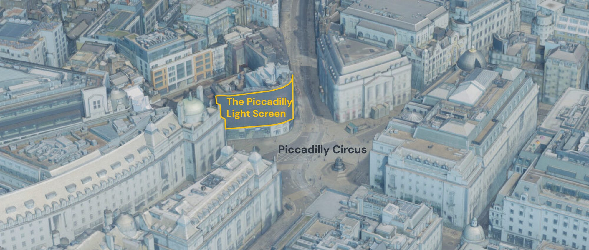

The Piccadilly Light
The Piccadilly Lights screen in London is a public urban interface shaped by advertising, hidden camera sensors and data-driven audience classification. This project turns that quiet spread of surveillance capitalism into something a person can walk through. In a Unity-based VR model of Piccadilly Circus, players build an avatar, choose how to travel, and watch the screen content change in response to their identity and route. Repeated play shifts the content from commercial targeting toward critical prompts, so the simulation becomes a tool for discussing privacy, data rights and the publicness of smart-city infrastructure.

Walk Cycle Drive Trigger-
01 · Create avatar
Gender, age and mood: the categories a sensing screen would sort a passer-by into.
-
02 · Choose travel
Walking, cycling, an ordinary car or a limousine. The tool then sets the route.
-
03 · Move through the site
Avatar and route together trigger targeted advertising on the screen.
-
04 · Repeat
On replay the screen plays artistic and knowledge videos about surveillance capitalism instead.